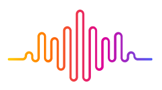

주요 구축사례
뮤직 플랫폼 구축 및 운영
음악 서비스 플랫폼
(구축 및 운영)
상담지원시스템 개발·운영
글로벌 BPO
(개발 및 운영 참여)
AutoQA 개발
카드사
(상담 후처리 자동평가)
민원신고 챗봇 개발
공공기관
(개발 참여)
위치기반 서비스 개발
세스코
(개발 참여)
검증된 수행 경험의 SI 파트너, 직접 만들고 운영하는 서비스 — You First You Always

실행하는 SI, 직접 운영하는 서비스, 이를 받치는 AI 역량 — 세 축으로 사업을 전개합니다.
공공·금융·유통·제조 정보시스템의 구축·고도화·운영. 검증된 수행 경험으로 실질적인 디지털 전환을 실행합니다.
슬라이드가 아니라 실제로 만들고 운영합니다. 자체 B2C 서비스 AXDevHub로 운영 노하우와 성장 동력을 확보합니다.
자체 모델 보유를 넘어, SI·서비스에 바로 결합하는 AI 역량을 갖췄습니다. 통합·운영·보안이 차별점입니다.
음악 서비스 플랫폼
(구축 및 운영)
글로벌 BPO
(개발 및 운영 참여)
카드사
(상담 후처리 자동평가)
공공기관
(개발 참여)
세스코
(개발 참여)
포에시아가 직접 만들고 운영하는 SI·SW 개발 생태계 허브입니다.
사업·과제·인력·프로젝트·커뮤니티를 한곳에서 — 개발자와 기업을 잇습니다.
SI·서비스에 바로 결합하는, 검증된 AI 기술 자산입니다.
42,500시간 학습 기반 실시간 음성인식. 인식률 95% 이상, 도메인 맞춤학습
사람처럼 자연스러운 합성음(MOS 4.3+). 맞춤형 음성학습 지원
민감정보 탐지·암복호화·마스킹. 운영 단계의 데이터 보안 차별화 역량
시나리오 + Modular RAG 하이브리드. 내부정보 기반 정확한 생성형 답변
VoiceGateway·STT·TTS·RAG 기반 24시간 무중단 전문상담 콜봇
상담지원·감정분석·자동평가(AutoQA)를 통합한 채널 AI 콜센터
포에시아와 함께 가치 있는 비즈니스를 만드세요.
hello@smilewithpoesia.com